SIRDE
Sistema de información para la recolección de datos estadísticos en el Instituto Municipal de Vialidad y Transporte Terrestre del Municipio Torres (IMVITRAT) con sede en el terminal de pasajeros de Carora, Edo. Lara, Venezuela.
Algunas capturas de pantalla del sistema
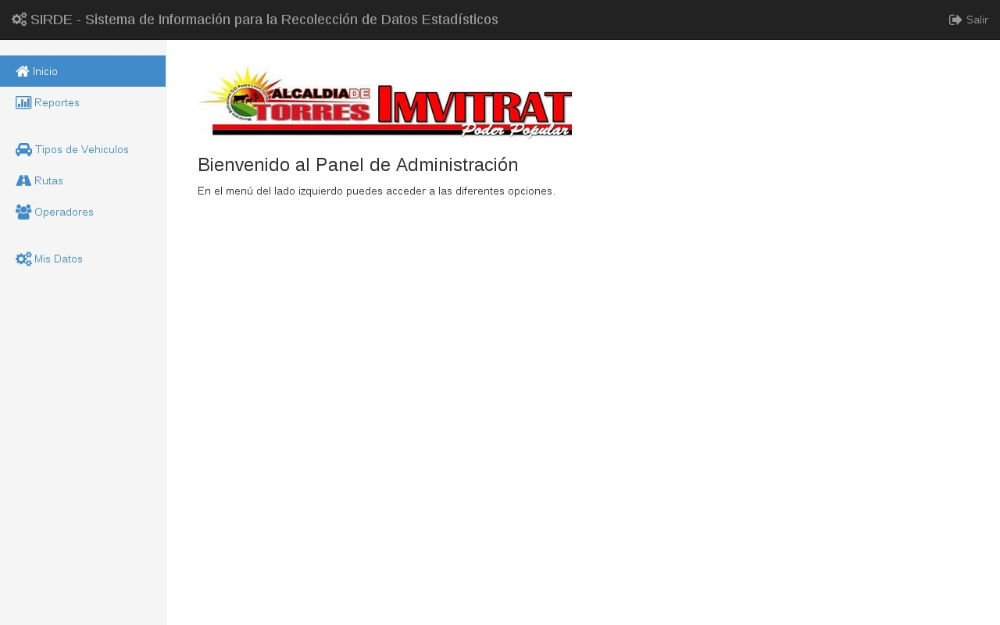
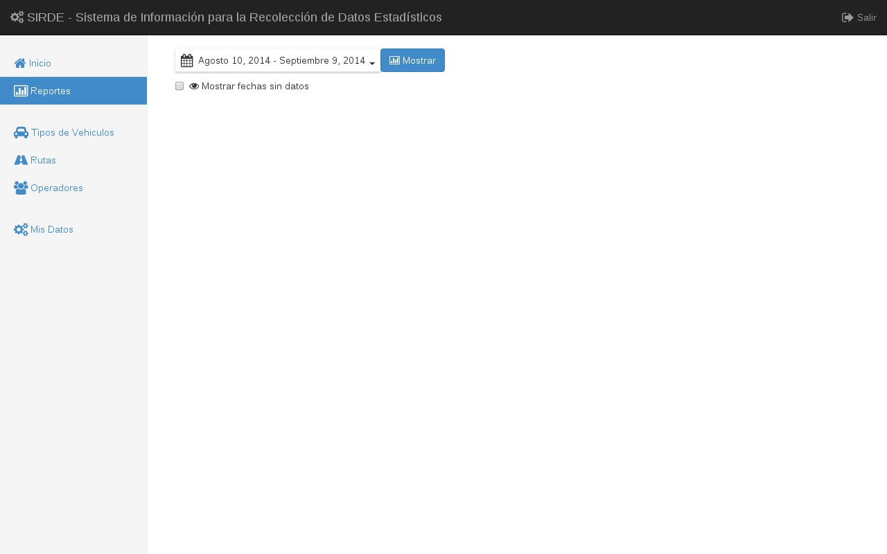
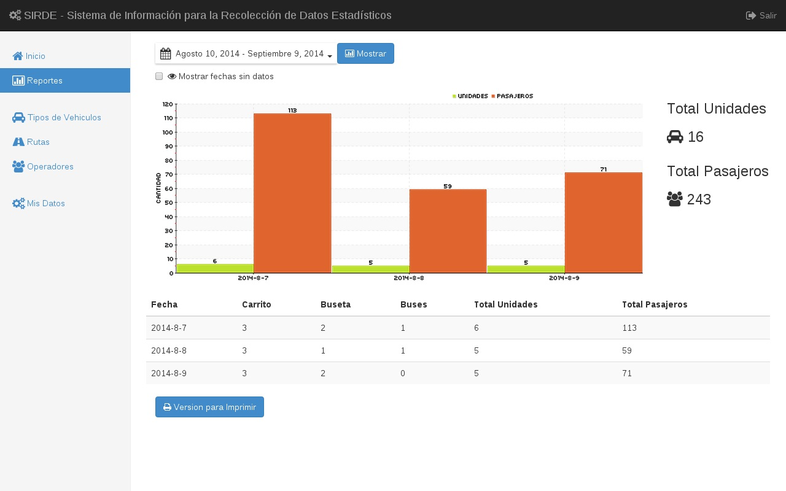
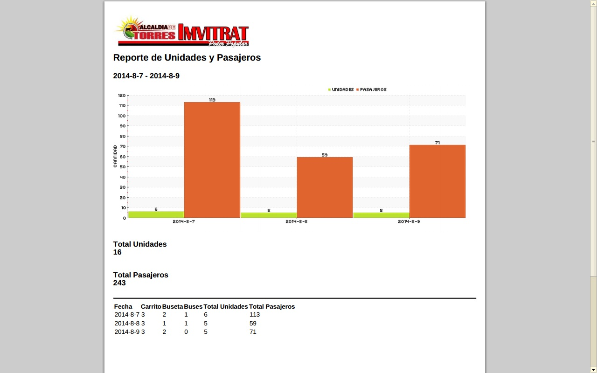
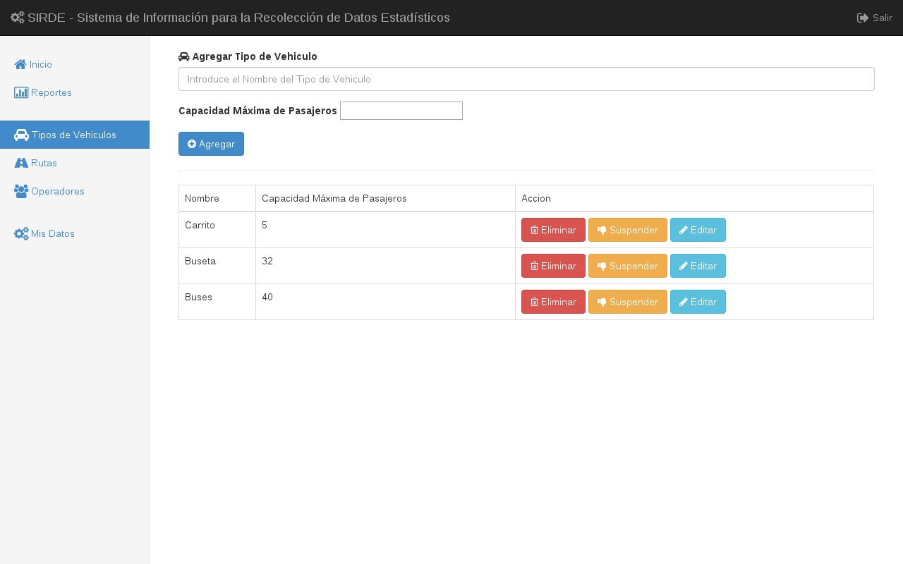
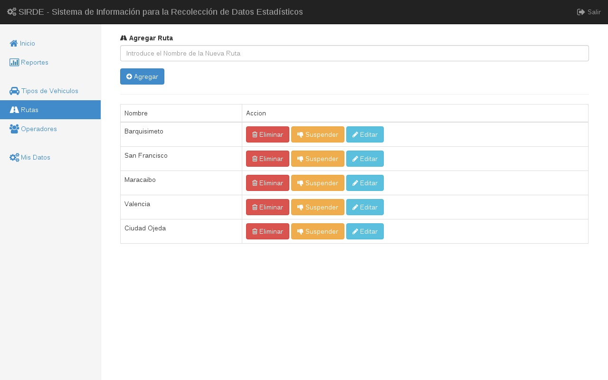
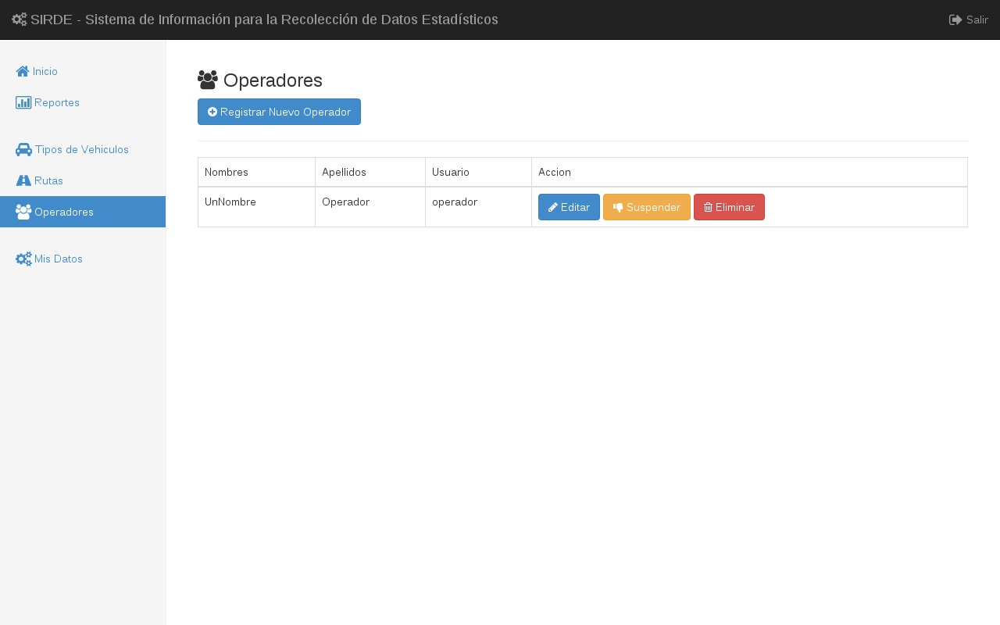
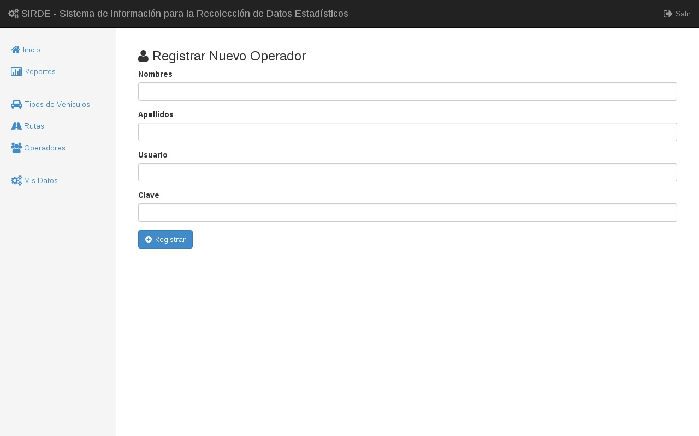
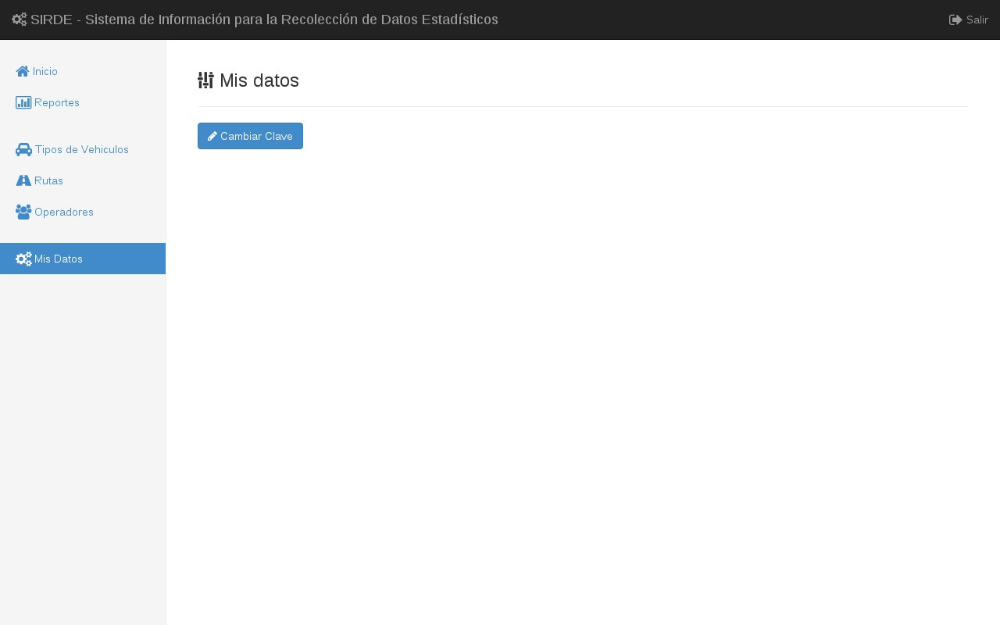
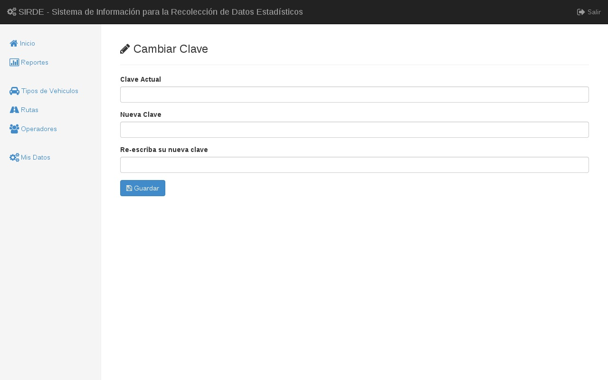
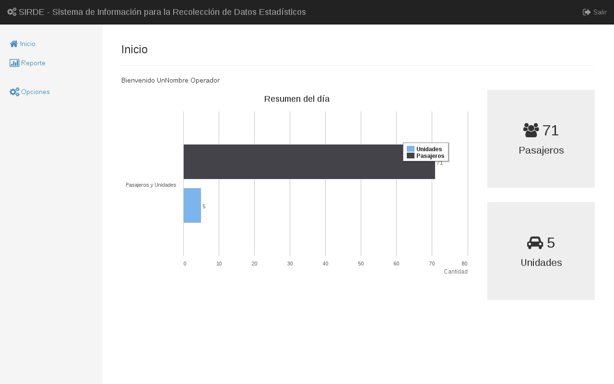
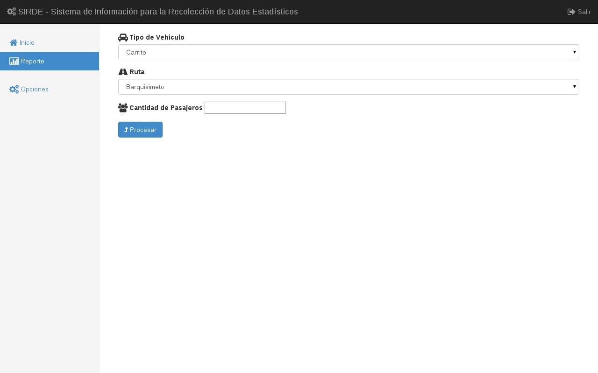
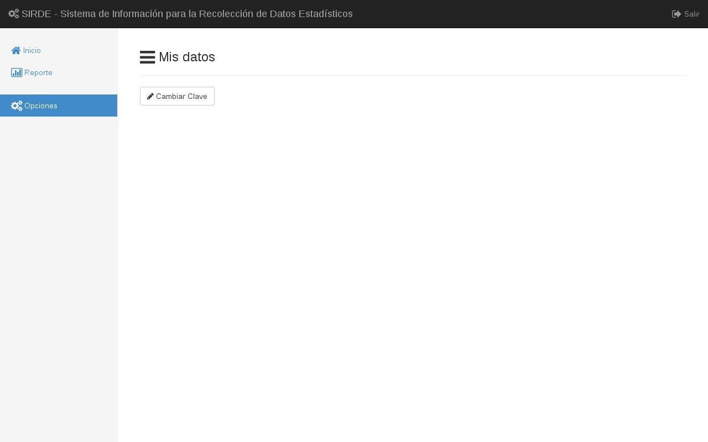
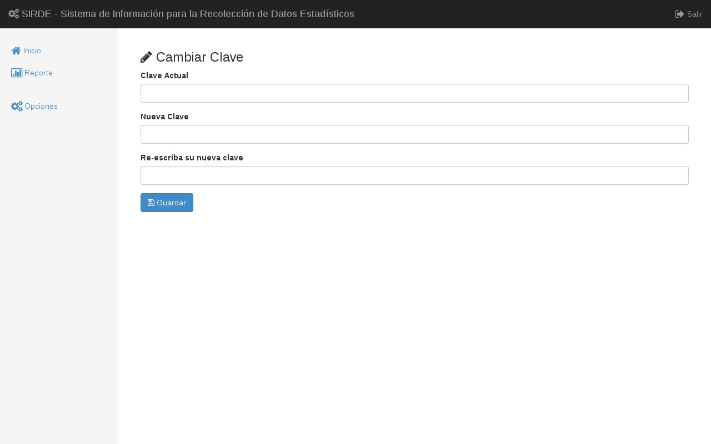